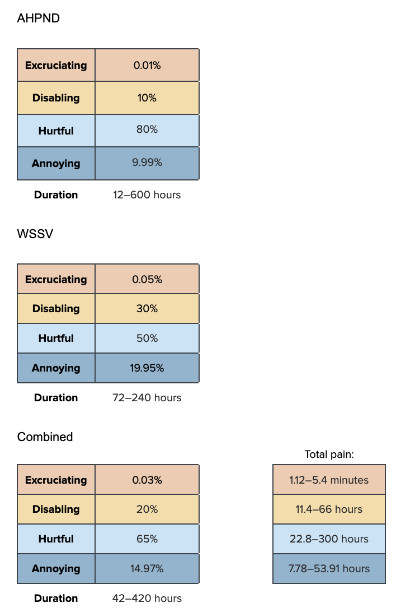

prev_ablation_stat <- data.frame(FarmType = c(
"Extensive", "Semi-Intensive","Intensive","Super-Intensive"),
mean = c(0.75, 0.75, 0.98, 0.98),
sd = c(0.2914784, 0.1733532, 0.05873486, 0.05873486))
prev_ablation_dist<-mapply(sample_beta, prev_ablation_stat$mean, prev_ablation_stat$sd)
colnames(prev_ablation_dist)<-prev_ablation_stat$FarmType
prev_ablation_unadjusted<-as.data.frame(prev_ablation_dist)Health
Eyestalk ablation
We split eyestalk ablation into two categories: The ablation itself and the hour immediately afterward (acute pain), and the week after that (chronic pain).
Prevalence
An estimate we will use for both parts is how often eyestalk ablation occurs in each production system. We assume that eyestalk ablation becomes more common in more intensive systems because these systems are far more likely to rely on captive broodstock than wild-caught shrimp. Still, the prevalence is unlikely to be 100% for intensive and super-intensive farms because some broodstock suppliers have stopped using eyestalk ablation (Albalat et al., 2022). We are less certain to what extent semi-intensive farms use captive broodstock. Traditionally, extensive systems relied more on wild-caught young shrimp, so we are less certain how prevalent eyestalk ablation is in this farm type.
Our prevalence estimates are:
| Extensive | Semi-intensive | Intensive | Super-intensive |
|---|---|---|---|
| 25–100% (mean 75%) | 50–100% (mean 75%) | 90–100% (mean 98%) | 90–100% (mean 98%) |
find_good_sd_binary(mean_val=0.75, tol=1e-6,
fifth_percentile=0.25, ninety_fifth_percentile=1)
find_good_sd_binary(mean_val=0.75, tol=1e-6,
fifth_percentile=0.5, ninety_fifth_percentile=1)
find_good_sd_binary(mean_val=0.98, tol=1e-6, sd_val=0.1,
fifth_percentile=0.9, ninety_fifth_percentile=1)[1] 0.2914784[1] 0.1733532[1] 0.05873486Sampling from beta distribution:
We also need to adjust for the fact that only female broodstock are subjected to eyestalk ablation, not their offspring who are actually raised for food. We calculate the number of broodstock by using the total number of shrimp that die on farms from the postlarval stage onward (from Waldhorn & Autric’s 2023 Guesstimate model), divided by the number of eggs different species lay per spawn, and assuming only half the eggs hatch.
See set up chapter for how the variables used here were calculated. First, we must calculate the number of shrimp that die on farms from the postlarval stage onward. We do so because other threats are evaluated for the harms they cause in the ongrowing stage only, so we must calculate the proportion of shrimp that are broodstock against only this population. We do so handling the data in the same way as the Set-up chapter, using the kde1d function to generate 100,000 samples.
library(kde1d) # load the required package
allspecies_dof<-as.data.frame(allspecies_dof) # load the estimations for number of shrimp that die on farms, calculated in the set-up chapter
# load mortality samples to calculate larval mortality rates for each species
vannamei_mort_samp<-read.csv("../data/vannamei_mortality_rates.csv",header=TRUE, sep=",") # Cells UY, UJ, and TF in the Guesstimate model
monodon_mort_samp<-read.csv("../data/monodon_mortality_rates.csv", header=TRUE, sep=",") # Cells ZA, XZ, and YR in the Guesstimate model
otherpen_mort_samp<-read.csv("../data/otherpen_mortality_rates.csv", header=TRUE,sep=",")
# Cells MU, UQ, and XJ in the Guesstimate model
vannamei_larval_prob<-data.frame(larval=rep(NA, 100000)) # create empty data frame
# fill empty data frame with data simulated from Guesstimate data using kde1d function
vannamei_larval_prob$larval<-vannamei_mort_samp$larval %>%
kde1d(xmin = 0,
xmax = 1) %>% # Probabilities cannot be less than 0 or more than 1 so we add these as xmin and xmax
rkde1d(100000,.)
# repeat for other taxa
monodon_larval_prob<-data.frame(larval=rep(NA, 100000))
monodon_larval_prob$larval<-monodon_mort_samp$larval %>%
kde1d(xmin = 0,
xmax = 1) %>%
rkde1d(100000,.)
otherpen_larval_prob<-data.frame(larval=rep(NA, 100000))
otherpen_larval_prob$larval<-otherpen_mort_samp$larval %>%
kde1d(xmin = 0,
xmax = 1) %>%
rkde1d(100000,.)
# calculate the number of shrimp that die on farms after the larval stage for each species
vannamei_dof_pl<-allspecies_dof$vannamei_dof*(1-vannamei_larval_prob$larval)
monodon_dof_pl<-allspecies_dof$monodon_dof*(1-monodon_larval_prob$larval)
otherpen_dof_pl<-allspecies_dof$otherpen_dof*(1-otherpen_larval_prob$larval)We now have the number of shrimp that die on farms, both in total and from the postlarval stage onward. Next, we can estimate the number of broodstock that would have been needed to produce the total number of shrimp that died on farms, and calculate that number of broodstock as a proportion of our population of interest (shrimp in the ongrowing stage).
# distribution of egg numbers
vannamei_eggs<-runif(100000, min=100000, max=250000) # according to FAO
vannamei_broodstock<-allspecies_dof$vannamei_dof/vannamei_eggs*0.5 # assuming only half of eggs hatch.
vannamei_broodstock_prop<-vannamei_broodstock/(vannamei_broodstock+allspecies_dof$vannamei_dof)
monodon_eggs<-runif(100000, min=500000, max=750000) # according to FAO
monodon_broodstock<-allspecies_dof$monodon_dof/monodon_eggs*0.5
monodon_broodstock_prop<-monodon_broodstock/(monodon_broodstock+allspecies_dof$monodon_dof)
otherpen_eggs<-runif(100000, min=200000, max=1000000) # according to Table 4.6a, Wickins and Lee (2002)
otherpen_broodstock<-allspecies_dof$otherpen_dof/otherpen_eggs*0.5
otherpen_broodstock_prop<-otherpen_broodstock/(otherpen_broodstock+allspecies_dof$otherpen_dof)
female_broodstock<-(vannamei_broodstock+monodon_broodstock+otherpen_broodstock)
female_broodstock_prop<- (female_broodstock/(female_broodstock+vannamei_dof_pl+monodon_dof_pl+otherpen_dof_pl))
head(female_broodstock_prop) # the proportion of shrimp that are female broodstock.[1] 2.206959e-06 3.640229e-06 2.544718e-06 4.045479e-06 3.934490e-06
[6] 4.239612e-06# multiply proportion of farms that source larvae from ablated broodstock by proportion of shrimp on those farms that are broodstock. This gives you the proportion of farmed broodstock that are ablated shrimp.
prev_ablation<-prev_ablation_unadjusted*female_broodstock_prop
#saveRDS(female_broodstock_prop, file="../data/female_broodstock_prop.RData")We can also see the average number of female broodstock.
mean(female_broodstock)[1] 2014017Pain-Tracks
first_dur_ablation<-sample_trunclogn(n, 1, .5, 1/12, 2)
plot(density(first_dur_ablation), xlab="Hours", main="Duration of acute eyestalk ablation pain")quantile(first_dur_ablation, probs = c(.05, .50, .95)) 5% 50% 95%
0.4058470 0.8718918 1.6749902 first_pain_ablation<-data.frame(sample_dirichlet(0.1, 55, 35, 9.9)) %>%
`colnames<-`(paincategories)Then for the second half:
# 168 hours in a week, sample from log-normal for consistency
sec_dur_ablation<-sample_trunclogn(n=n, min_value=0, max_value=240, mean=120, sd=72)
plot(density(sec_dur_ablation) , main="Duration of chronic eyestalk ablation pain", xlab="Hours")quantile(sec_dur_ablation, probs = c(.05, .50, .95)) 5% 50% 95%
40.34609 98.22554 202.49194 sec_pain_ablation<-data.frame(sample_dirichlet(0.002, 0.004, 10, 89.994)) %>%
`colnames<-`(paincategories)Combine into Pain-Tracks:
paintrack_ablation<-(first_dur_ablation * first_pain_ablation) + (
sec_dur_ablation * sec_pain_ablation)Now we combine the Pain-Tracks with prevalence.
ablation_farms<-data.frame(ext = paintrack_ablation*prev_ablation$Extensive*prop_sample$Ext,
semi = paintrack_ablation*prev_ablation$`Semi-Intensive`*prop_sample$Semi,
int = paintrack_ablation*prev_ablation$Intensive*prop_sample$Int,
super = paintrack_ablation*prev_ablation$`Super-Intensive`*prop_sample$Super)Finally, we combine the pain categories across farm types and calculate the disabling-equivalent pain hours.
ablation<-ablation_farms %>%
mutate(allfarms.Annoying = ext.Annoying + semi.Annoying + int.Annoying + super.Annoying,
allfarms.Hurtful = ext.Hurtful + semi.Hurtful + int.Hurtful + super.Hurtful,
allfarms.Disabling = ext.Disabling + semi.Disabling + int.Disabling + super.Disabling,
allfarms.Excruciating = ext.Excruciating + semi.Excruciating + int.Excruciating + super.Excruciating,)
average_hours_ablation <- ablation %>%
select(starts_with("allfarms"))
average_hours_ablation$Disabling_Equivalent<- (
average_hours_ablation$allfarms.Annoying*Annoying_Weight) + (
average_hours_ablation$allfarms.Hurtful*Hurtful_Weight) +(
average_hours_ablation$allfarms.Disabling*Disabling_Weight)+(
average_hours_ablation$allfarms.Excruciating*Excruciating_Weight)
ablation_summary<-cbind(round(rbind(
(quantile(x =average_hours_ablation$allfarms.Annoying, probs = c(.05, .50, .95))),
(quantile(x =average_hours_ablation$allfarms.Hurtful, probs = c(.05, .50, .95))),
(quantile(x =average_hours_ablation$allfarms.Disabling, probs = c(.05, .50, .95))),
(quantile(x =average_hours_ablation$allfarms.Excruciating, probs = c(.05, .50, .95))),
(quantile(x =average_hours_ablation$Disabling_Equivalent, probs = c(.05, .50, .95)))), 10),
"Mean" = colMeans(average_hours_ablation))
row.names(ablation_summary)<-c(
"Annoying_ablation","Hurtful_ablation","Disabling_ablation", "Excruciating_ablation", "Disabling-Equivalent_Eyestalk_ablation")
show_table(ablation_summary)| 5% | 50% | 95% | Mean | |
|---|---|---|---|---|
| Annoying_ablation | 9.54e-05 | 0.0002542 | 0.0005995 | 2.89e-04 |
| Hurtful_ablation | 9.70e-06 | 0.0000279 | 0.0000739 | 3.31e-05 |
| Disabling_ablation | 6.00e-07 | 0.0000014 | 0.0000031 | 1.60e-06 |
| Excruciating_ablation | 0.00e+00 | 0.0000000 | 0.0000000 | 0.00e+00 |
| Disabling-Equivalent_Eyestalk_ablation | 2.60e-06 | 0.0000066 | 0.0000200 | 1.17e-05 |
Biosecurity failures
Here, we are evaluating shrimp suffering from diseases cause only by biosecurity failures on a farm. This welfare threat does not get credit for all of the welfare issues associated with diseases, but only diseases that cannot be explained by other factors. Biosecurity failures may include using a contaminated water source, equipment or feed, or not preventing wild animals (e.g., birds or insects) from transmitting a disease.
Prevalence
14.5% of P. vannamei and 32.5% of P. monodon shrimp die pre-slaughter in the ongrowing stage (McKay & McAuliffe, 2024. Table 1). In our estimates of the average days lived by a shrimp (see Calculating pre-slaughter mortality rates), ~16.8% of P. vannamei, P. monodon, and other penaeid shrimp die in the ongrowing stage prior to slaughter:
mean(stage_probabilities[,2])[1] 0.168777Here, we hypothesize that half of these are from diseases. This would mean roughly 8.4% of shrimp die from diseases. Potentially, some diseases are never noticed or are treated and shrimp do not die from them (though many shrimp viruses cause significant losses). On the other hand, some diseases instances will be caused by other welfare issues (e.g., physiological stress from nonoptimal water quality), which we are not counting here. As such, we estimate that 5–20% of shrimp . We think diseases are most prevalent in semi-intensive farms as they have reasonably high stocking densities but fewer resources to put into biosecurity measures.
The numbers in the table below equate to roughly 5–20% of shrimp overall when considering the proportions of farm types.
| Extensive | Semi-intensive | Intensive | Super-intensive |
|---|---|---|---|
| 5–20% (mean 12.5%) | 5.5–30% (mean 17.75%) | 5–18% (mean 11.5%) | 0.5–5% (mean 2.75%) |
find_good_sd_binary(mean_val=0.125, tol=1e-6,
fifth_percentile=0.05, ninety_fifth_percentile=0.2)
find_good_sd_binary(mean_val=0.1775, tol=1e-6,
fifth_percentile=0.055, ninety_fifth_percentile=0.3)
find_good_sd_binary(mean_val=0.115, tol=1e-6,
fifth_percentile=0.05, ninety_fifth_percentile=0.18)
find_good_sd_binary(mean_val=0.0275, tol=1e-6,sd_val=0.1,
fifth_percentile=0.005, ninety_fifth_percentile=0.05)[1] 0.04751694[1] 0.07778246[1] 0.04078287[1] 0.01519449Sampling from beta distribution:
prev_disease_stat <- data.frame(FarmType = c(
"Extensive", "Semi-Intensive","Intensive","Super-Intensive"),
mean = c(0.125, 0.1775, 0.115, 0.0275),
sd = c(0.04715328, 0.0776112, 0.04096845, 0.01522693))
prev_disease_dist<-mapply(sample_beta, prev_disease_stat$mean, prev_disease_stat$sd)
colnames(prev_disease_dist)<-prev_disease_stat$FarmType
prev_disease<-as.data.frame(prev_disease_dist)Pain-Tracks
We model mostly on information about White Spot Syndrome Virus (WSSV) and Acute Hepatopancreatic Necrosis Disease (AHPND), as many sources report that these have most negatively impacted industry production, suggesting they are the most prevalent. While Flegel (2019, Fig. 3) shows that the impact of AHPND on production was most severe, WSSV has been present for much longer (since ~1996) and shrimp are still affected today, so we weight each equally.We combine these into one pain track by multiplying each by half (since most shrimp die from these diseases, its likely they do not experience both).

AHPND duration and pain:
ahpnd_dur_disease<-runif(n, 12, 600)
ahpnd_pain_disease<-data.frame(sample_dirichlet(0.01, 10, 80, 9.99)) %>%
`colnames<-`(paincategories)WSSV duration and pain:
wssv_dur_disease<-runif(n, 72, 240)
wssv_pain_disease<-data.frame(sample_dirichlet(0.05, 30, 50, 19.95)) %>%
`colnames<-`(paincategories)Combine into Pain-Tracks:
paintrack_disease<-(ahpnd_dur_disease * ahpnd_pain_disease * 0.5) + (
wssv_dur_disease * wssv_pain_disease * 0.5)Weight the pain tracks by prevalence estimations and proportion of farming attributable to each farm type.
disease_farms<-data.frame(
ext = paintrack_disease*prev_disease$Extensive*prop_sample$Ext,
semi = paintrack_disease*prev_disease$`Semi-Intensive`*prop_sample$Semi,
int = paintrack_disease*prev_disease$Intensive*prop_sample$Int,
super = paintrack_disease*prev_disease$`Super-Intensive`*prop_sample$Super)Add the pain categories across farm types and calculate the disabling-equivalent pain hours.
disease<-disease_farms %>%
mutate(allfarms.Annoying = ext.Annoying + semi.Annoying + int.Annoying + super.Annoying,
allfarms.Hurtful = ext.Hurtful + semi.Hurtful + int.Hurtful + super.Hurtful,
allfarms.Disabling = ext.Disabling + semi.Disabling + int.Disabling + super.Disabling,
allfarms.Excruciating = ext.Excruciating + semi.Excruciating + int.Excruciating + super.Excruciating,)
average_hours_disease <- disease %>%
select(starts_with("allfarms"))
average_hours_disease$Disabling_Equivalent<- (
average_hours_disease$allfarms.Annoying*Annoying_Weight) + (
average_hours_disease$allfarms.Hurtful*Hurtful_Weight) +(
average_hours_disease$allfarms.Disabling*Disabling_Weight)+(
average_hours_disease$allfarms.Excruciating*Excruciating_Weight)
disease_summary<-cbind(round(rbind(
(quantile(x =average_hours_disease$allfarms.Annoying, probs = c(.05, .50, .95))),
(quantile(x =average_hours_disease$allfarms.Hurtful, probs = c(.05, .50, .95))),
(quantile(x =average_hours_disease$allfarms.Disabling, probs = c(.05, .50, .95))),
(quantile(x =average_hours_disease$allfarms.Excruciating, probs = c(.05, .50, .95))),
(quantile(x =average_hours_disease$Disabling_Equivalent, probs = c(.05, .50, .95)))), 10),
"Mean" = colMeans(average_hours_disease))
row.names(disease_summary)<-c(
"Annoying_disease","Hurtful_disease","Disabling_disease", "Excruciating_disease", "Disabling-Equivalent_Biosecurity_failures")
show_table(disease_summary)| 5% | 50% | 95% | Mean | |
|---|---|---|---|---|
| Annoying_disease | 1.502092 | 3.5816294 | 7.2225245 | 3.8682486 |
| Hurtful_disease | 5.965176 | 18.9903490 | 39.1769788 | 20.2445222 |
| Disabling_disease | 2.043777 | 4.5430569 | 8.7223413 | 4.8527187 |
| Excruciating_disease | 0.000000 | 0.0000005 | 0.0352904 | 0.0070193 |
| Disabling-Equivalent_Biosecurity_failures | 2.902055 | 7.2178666 | 24.1251903 | 10.6472735 |